Dongola / Argo Island, Northern State, Sudan (19.16° N, 30.48° E)
Majority of clinic operations (08:00 – 16:00) align directly with peak daytime solar irradiance.
Essential overnight loads (16:00 – 08:00) for vaccine refrigeration and medical lighting.
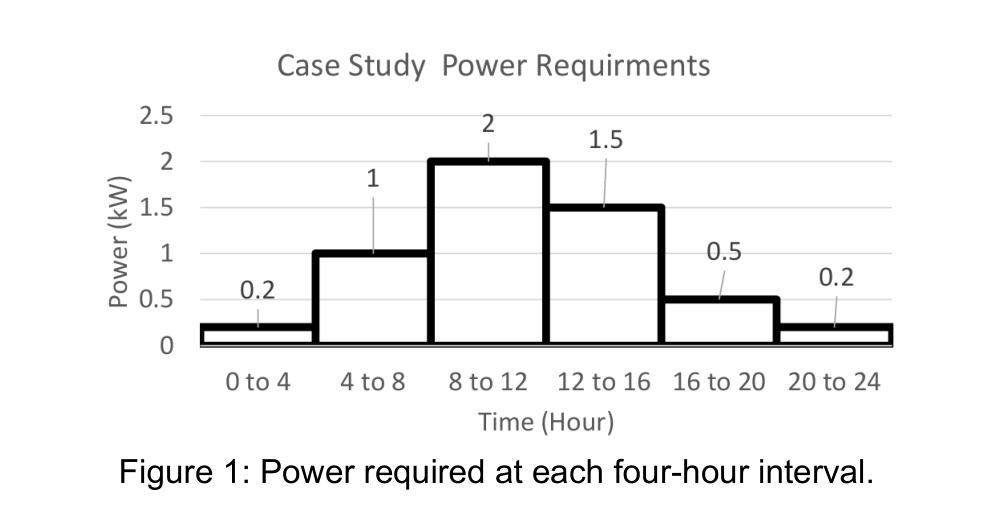
Applying the 1° Shift: Uninhabited Desert Dunes → Real Riverine Community
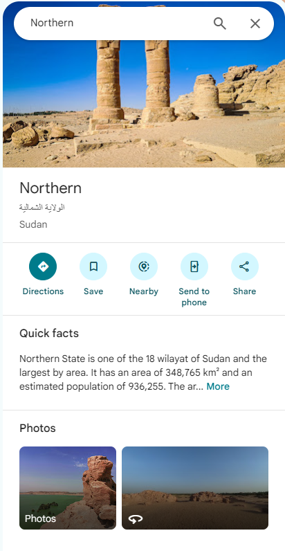
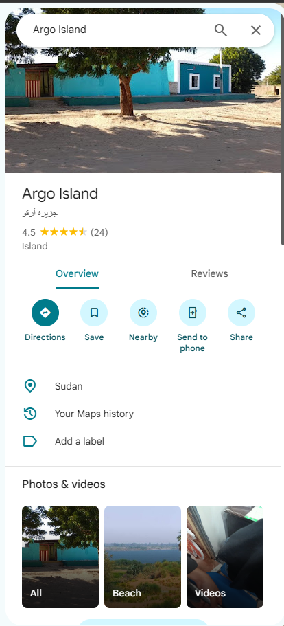
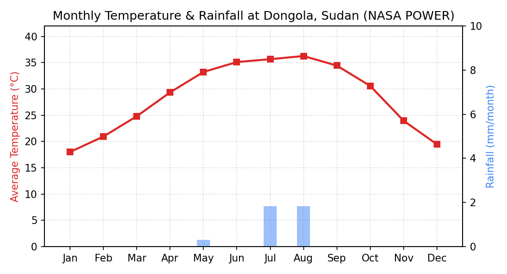
High-Level Assessment Across All 5 Technologies Covered in Module
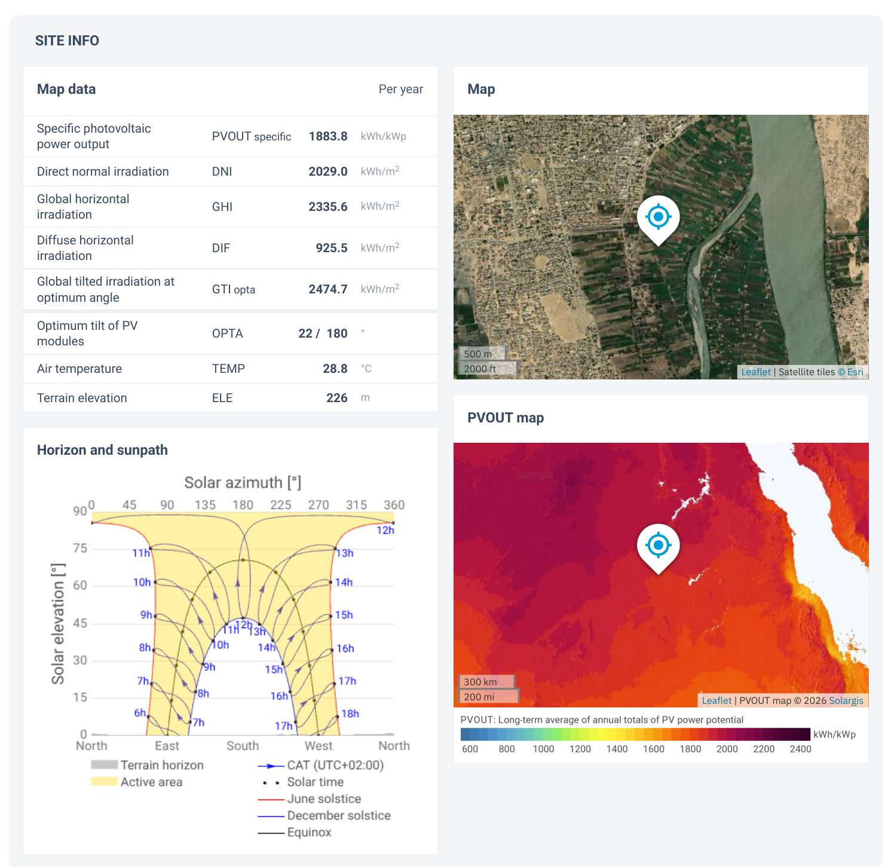
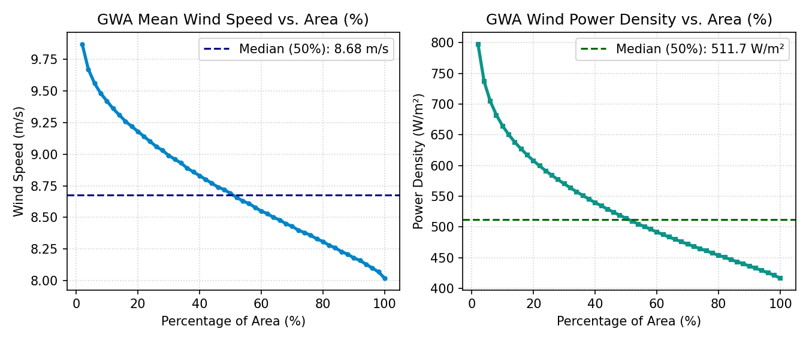
| Resource | Measured Evidence at Dongola | Assessment |
|---|---|---|
| 1. Solar PV | 6.78 PSH/day (GTI 2,475 kWh/m²/yr at 22° tilt); 1,884 kWh/kWp specific yield | 1st Choice (Selected) |
| 2. Wind Power | NASA 10m wind: 5.11 m/s; GWA 100m wind: 8.69 m/s (514 W/m²) | 2nd Choice (Comparison) |
| 3. Hydro Power | Annual rainfall < 4 mm/yr; Nile plain has flat elevation and zero hydraulic head | Unsuitable |
| 4. Geothermal | No tectonic rift or volcanic thermal anomalies within 600 km | Unsuitable |
| 5. Wave & Tidal | Landlocked inland desert (>650 km inland from Red Sea) | Impossible |
Qualitative & Quantitative Justification for Primary Clinic Supply
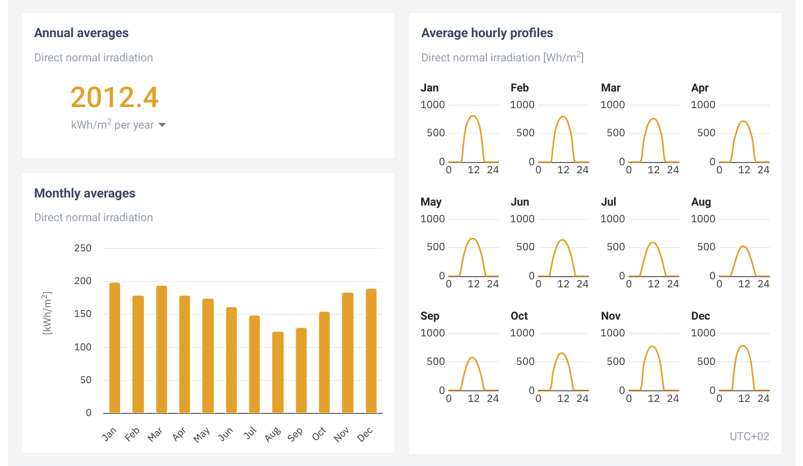
| Criterion | Solar PV (Preferred) | Small Wind (2nd Choice) |
|---|---|---|
| 1. Resource Reliability | Constant daily sun: 6.78 PSH/day at 22° tilt; zero cloudy months | NASA 10m wind: 5.1 m/s; cubic power law (P ∝ v3) intermittency |
| 2. Load Synchronisation | Directly powers 65% of clinic load during daylight hours (08:00 – 16:00) | Unpredictable daytime lulls require significantly larger battery capacity |
| 3. Desert Durability | Zero moving parts; only periodic dry dust wiping required | Moving blades, bearings, and gears suffer heavy Saharan sand abrasion |
| 4. Installed Economics | Low modular cost (~$0.30/Wp); simple ground-mounted aluminium racks | High capital cost: 10–15 m guyed mast, concrete base & crane logistics |
Coupled DC-Bus Architecture with Li-Ion Storage & Single-Phase Inverter
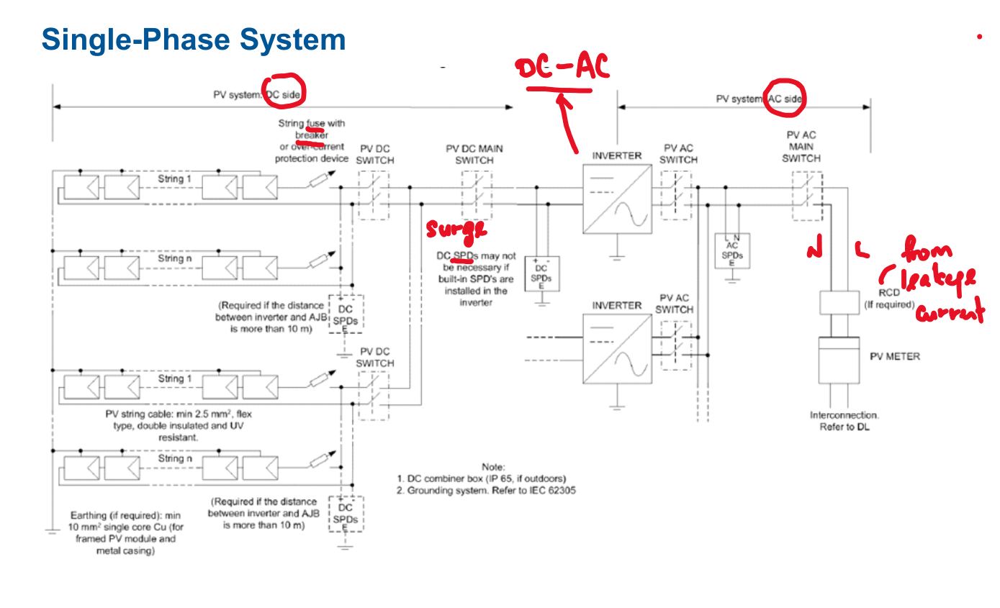
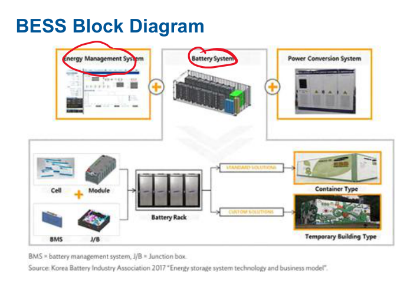
Energy-Constraint Sizing Using Lecture 3 Equations & Hardware Datasheets
Calculated as 21.6 kWh/day × 365 days for 100% off-grid reliability.
Derived from Tamb = 28.8°C and SANYO coefficient β = −0.30%/°C.
Max DC input (4,410 W) matches array exactly; rated 3,500 W AC exceeds 2.0 kW peak load.
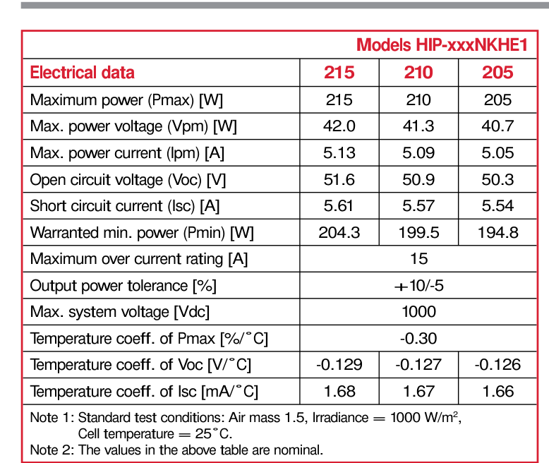
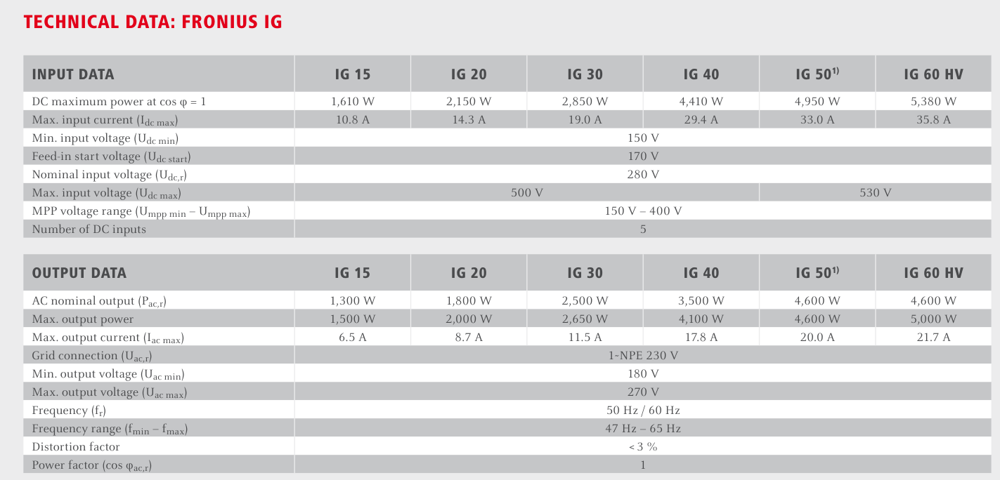
4-Hour Store vs. Drain Energy Balance & Technology Selection
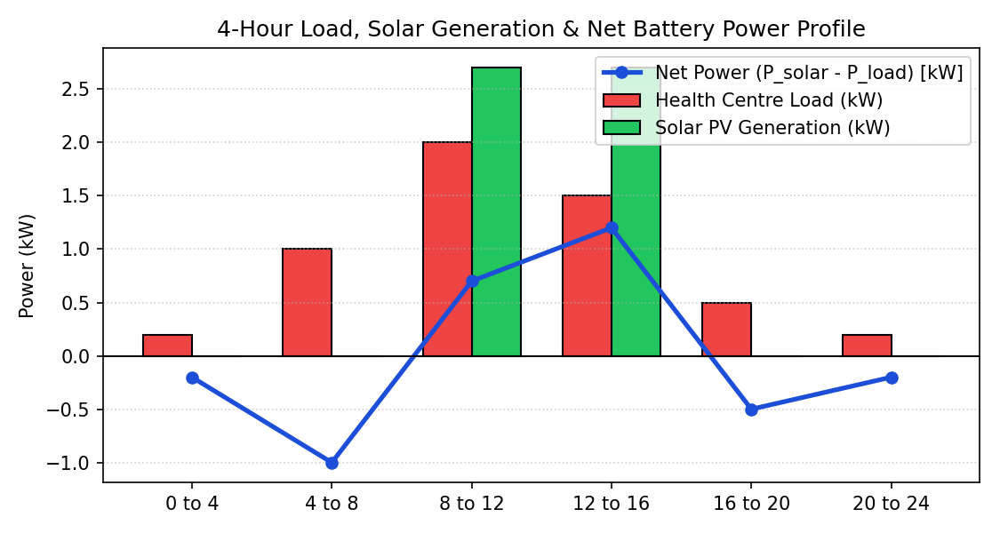
| Time Block | Load Energy | Solar Energy | Store (Excess) | Drain (Night) |
|---|---|---|---|---|
| 00:00 – 08:00 | 4.8 kWh | 0 kWh | — | 4.8 kWh |
| 08:00 – 16:00 | 14.0 kWh | 21.6 kWh | 7.6 kWh | — |
| 16:00 – 24:00 | 2.8 kWh | 0 kWh | — | 2.8 kWh |
| Total 24 Hours | 21.6 kWh | 21.6 kWh | 7.6 kWh Stored | 7.6 kWh Drained |
Verified CAPEX, OPEX & Payback Against Rural Diesel Baseline ($0.40/kWh)
| Component | Quantity | Verified Cost | Lifetime |
|---|---|---|---|
| Solar Panels (SANYO 210W) | 21 panels (4.41 kWp) | $1,500 | 20–25 yrs (IRENA 2024) |
| Li-Ion BESS (2 kWh units) | 8 units (16 kWh) | $4,000 | 10–15 yrs (NREL 2025) |
| Fronius IG 40 + Controller | 1 unit (3.5 kW AC) | $1,200 | 10–12 yrs |
| Mounting, BOS & Sudan Delivery | Cables, frame, logistics | $1,800 | 20 yrs (UNDP Sudan) |
| Total Initial CAPEX | Turnkey System | $8,500 | Complete Installation |
| Year 11 Replacement | 1× Battery + Inverter | $5,200 | Refurbished for yrs 11–20 |
| Annual Maintenance (OPEX) | Dust wiping & inspection | $200/yr | $4,000 over 20 years |
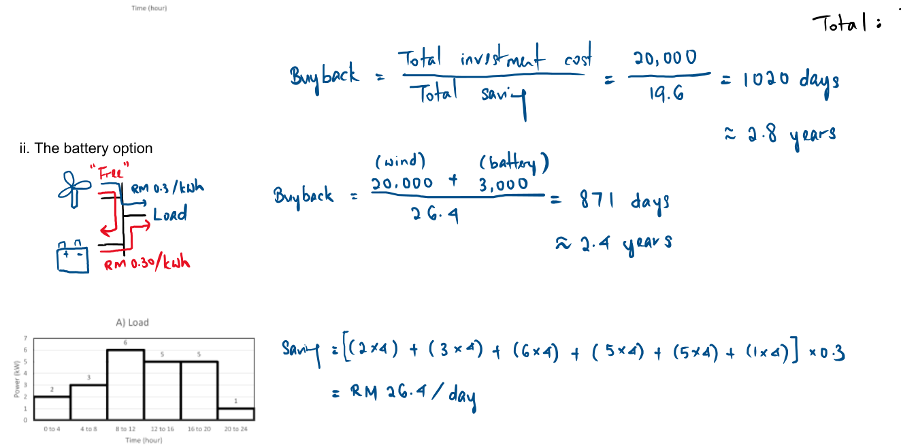
Proposed Solar PV + BESS vs. 3.5 kW Baseline Diesel Generator
Generates 157,680 kWh over 20 years with zero fuel burned.
Eliminates fragile fuel supply routes in rural Sudan.
| # | Criterion | Solar PV + Battery | Diesel Generator |
|---|---|---|---|
| 1 | Initial CAPEX | $8,500 (Panels, battery & inverter) | Diesel: $1,800 (79% cheaper) |
| 2 | Annual Running Cost | Solar: $200/yr (94% cheaper) | $3,150/year (2,760 L fuel + oil changes) |
| 3 | 20-Year Total Cost | Solar: $17,700 ($0.11/kWh) | $68,400 ($0.43/kWh) − Saves $50,700! |
| 4 | 20-Year CO₂ Footprint | Solar: 7.9 tonnes (94.7% cut) | 149.8 tonnes (From burning 55,188 L diesel) |
| 5 | Noise & Supply Security | Solar: 0 dB Silent & Free Sun | 75–85 dB continuous noise; fuel shortage risks |
Fact-Checking Generative AI Outputs Against Peer-Reviewed Benchmarks
| Dimension | Generative AI Output | Verified Ground-Truth Fix |
|---|---|---|
| What AI Got Right | Solar panel pricing (~$0.30/Wp); zero operating emissions | Validated Matches IRENA 2024 global report |
| What AI Got Wrong | Quoted $150/kWh EV battery; assumed 1 battery lasts 20 yrs | Corrected to $250/kWh rack battery + $5,200 replacement at Yr 11 |
| Hidden Assumptions | Assumed free local shipping; assumed 100% generator efficiency | Added $1,800 remote Sudan BOS/logistics; used realistic 0.35 L/kWh fuel burn |
| 20-Yr Cost Correction | $7,420 (Unrealistically low) | $17,700 (Realistic turnkey lifecycle cost) |
World Bank / Solargis Global Solar Atlas & NASA POWER Agroclimatology (Dongola 19.16°N, 30.48°E).
IRENA (2024) Renewable Power Generation Costs; NREL / NLR (2025) Battery Storage Cost Projections.
UNDP Sudan (2024) Solar Energy Value Chains in Sudan; NREL LCA PV Harmonization Study.